Air bag module and pre-tensioner seat belt deployment procedures
- • A live (undeployed) air bag module and pre-tensioner seat belt may accidentally deploy when it is disposed of and cause serious injury. Do not dispose of a live (undeployed) air bag module and pre-tensioner seat belt. If the SSTs (Deployment tool and Adapter harness) are not available, consult the nearest Mazda representative for assistance.
- • Deploying the air bag modules and pre-tensioner seat belts inside the vehicle may cause damage to the vehicle interior. When the vehicle is not to be scrapped, always deploy the air bag modules and pre-tensioner seat belts outside the vehicle.
Deployment Procedure for Inside of Vehicle
1. Inspect the SST (Deployment tool). (See INSPECTION OF SST (DEPLOYMENT TOOL).)
2. Move the vehicle to an open space, away from strong winds, and close all of the vehicle doors and windows.
3. Turn the ignition switch to the LOCK position.
4. Disconnect the negative battery cable and wait for 1 min or more.
5. Follow the appropriate procedure for deploying the air bag module or pre-tensioner seat belt.
Driver-side air bag module
1. Remove the driver-side air bag module. (See DRIVER-SIDE AIR BAG MODULE REMOVAL/INSTALLATION.)
2. Disconnect the short wiring harness from the driver-side air bag module.
3. Connect the SST (Adapter harness) to the driver-side air bag module as shown in the figure.

4. Install the driver-side air bag module. (See DRIVER-SIDE AIR BAG MODULE REMOVAL/INSTALLATION.)
5. Connect the SST (Deployment tool) SST to the (Adapter harness).
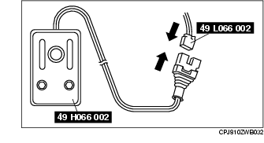
6. Connect both SSTs (Deployment tool) to the battery. Connect the power supply red clip to the positive battery terminal, and the black clip to the negative battery terminal.
7. Verify that the red lamp on both SSTs (Deployment tool) is illuminated.
8. Make sure all persons are standing at least 6 m {20 ft} away from the vehicle.
9. Press the activation switch on the SST (Deployment tool) connected with 49 L066 002 (a yellow connector) of the SST (Adapter harness), and after 3 s, press the activation switch on the other SST (Deployment tool) to operate (deploy) the air bag module (both inflators).

- • The air bag module is very hot immediately after it is operated (deployed). You can get burned. Do not touch the air bag module for at least 15 min after deployment.
10. Disconnect the SST (Deployment tool) from the SST (Adapter harness).
Passenger-side air bag module
1. Remove the passenger-side air bag module. (See PASSENGER-SIDE AIR BAG MODULE REMOVAL/INSTALLATION.)
2. Connect the SST (Adapter harness) to the passenger-side air bag module as shown in the figure.

3. Install the passenger-side air bag module. (See PASSENGER-SIDE AIR BAG MODULE REMOVAL/INSTALLATION.)
4. Connect the SST (Deployment tool) to the SST (Adapter harness).

5. Connect both SSTs (Deployment tool) to the battery. Connect the power supply red clip to the positive battery terminal, and the black clip to the negative battery terminal.
6. Verify that the red lamp on both SSTs (Deployment tool) is illuminated.
7. Make sure all persons are standing at least 6 m {20 ft} away from the vehicle.
8. Press the activation switch on the SST (Deployment tool) to deploy the passenger-side air bag module.

- • The air bag module is very hot immediately after it is operated (deployed). You can be burned. Do not touch the air bag module for at least 15 min after deployment.
9. Disconnect the SST (Deployment tool) from the SST (Adapter harness).
Side air bag module
1. Disconnect the side air bag module connector.
2. Connect the SST (Adapter harness) to the side air bag module.
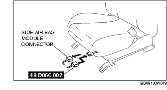
3. Connect the SST (Deployment tool) to the SST (Adapter harness).

4. Connect the SST (Deployment tool) to the battery. (Connect the power supply red clip to the battery positive terminal, and the black clip to the battery negative terminal.)
5. Verify that the red light on the SST (Deployment tool) is illuminated.
6. Make sure all persons are standing at least 6 m {20 ft} away from the vehicle.
7. Press the activation switch on the SST (Deployment tool) to operate (deploy) the side air bag module.

8. Disconnect the SST (Deployment tool) from the SST (Adapter harness).
Curtain air bag module
1. Remove the trunk side trim. (See TRUNK SIDE TRIM REMOVAL/INSTALLATION.)
2. Disconnect the curtain air bag module connector.

3. Connect the SST (Adapter harness) to the curtain air bag module.
4. Connect the SST (Deployment tool) to the SST (Adapter harness).

5. Connect the SST (Deployment tool) to the battery. (Connect the power supply red clip to the battery positive terminal, and the black clip to the battery negative terminal.)
6. Verify that the red light on the SST (Deployment tool) is illuminated.
7. Make sure all persons are standing at least 6 m {20 ft} away from the vehicle.
8. Press the activation switch on the SST (Deployment tool) to operate (deploy) the curtain air bag module.

9. Disconnect the SST (Deployment tool) from the SST (Adapter harness).
Pre-tensioner Seat Belt
1. Remove the B-pillar lower trim. (See B-PILLAR LOWER TRIM REMOVAL/INSTALLATION.)
2. Remove the pre-tensioner seat belt and connect the SST (Adapter harness) to it as shown in the figure. (See FRONT SEAT BELT REMOVAL/INSTALLATION.)
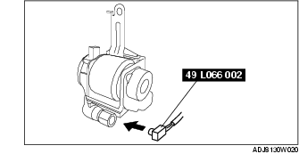
3. Install the pre-tensioner seat belt.
4. Connect the SST (Deployment tool) to the SST (Adapter harness).
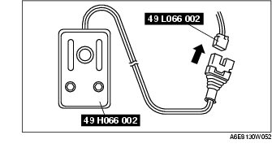
5. Connect the SST (Deployment tool) to the battery. Connect the power supply red clip to the positive battery terminal, the black clip to the negative battery terminal.
6. Verify that the red light on the SST (Deployment tool) is illuminated.
7. Make sure all persons are standing at least 6 m {20 ft} away from the vehicle.
8. Press the activation switch on the SST (Deployment tool) to deploy the pre-tensioner seat belt.

9. Disconnect the SST (Deployment tool) from the SST (Adapter harness).
Deployment Procedure for Outside of Vehicle
1. Inspect the SST (Deployment tool). (See INSPECTION OF SST (DEPLOYMENT TOOL).)
2. Turn the ignition switch to the LOCK position.
3. Disconnect the negative battery cable and wait for 1 min or more.
4. Follow the appropriate procedure for deploying the air bag module or pre-tensioner seat belt.
Driver-side air bag module
1. Remove the driver-side air bag module. (See DRIVER-SIDE AIR BAG MODULE REMOVAL/INSTALLATION.)
2. Disconnect the short wiring harness from the driver-side air bag module.
3. Install the SST (Adapter harness) to the driver-side air bag module as shown in the figure.

4. Place the driver-side air bag module on the center of the tire wheel with the module facing up. To secure the air bag module to the tire wheel, wrap the wire (diameter of 1.25 mm2 or more) through the wheel and around the bolt installation hole at least four times.

- • If the air bag module is not properly installed to the tire wheel, serious injury may occur when the module is deployed. When installing the air bag module to the tire wheel, make sure the module is facing up.
5. Stack three tires on top of the tire with the driver-side air bag module. Stack another tire that has a wheel on top of the four tires.
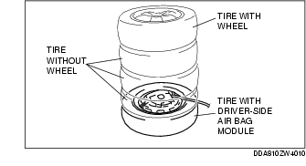
6. Tie all tires together with wire.

7. Connect the SST (Deployment tool) to the SST (Adapter harness).

8. Connect both SSTs (Deployment tool) to the battery. Connect the power supply red clip to the positive battery terminal, and the black clip to the negative battery terminal.
9. Verify that the red lamp on both SSTs (Deployment tool) is illuminated.
10. Make sure all persons are standing at least 6 m {20 ft} away from the vehicle.
11. Press the activation switch on the SST (Deployment tool) connected with 49 L066 002 (a yellow connector) of the SST (Adapter harness), and after 3 s, press the activation switch on the other SST (Deployment tool) to operate (deploy) the air bag module (both inflators).

- • The air bag module is very hot immediately after it is operated (deployed). You can be burned. Do not touch the air bag module for at least 15 min after deployment.
12. Disconnect the SST (Deployment tool) from the SST (Adapter harness).
Passenger-side air bag module
1. Remove the passenger-side air bag module. (See PASSENGER-SIDE AIR BAG MODULE REMOVAL/INSTALLATION.)
2. Connect the SST (Adapter harness) to the passenger-side air bag module as shown in the figure.

3. Place the passenger-side air bag module facing the center of the tire wheel with the module facing up. To secure the air bag module to the tire wheel, wrap the wire (diameter of 1.25 mm2 or more) through the tire and around the bolt installation hole at least four times.

- • If the air bag module is not properly installed to the tire, serious injury may occur when the module is deployed. When installing the air bag module to the tire, make sure the module is facing the center of the tire.
4. Stack the tire with the passenger-side air bag module on top of two tires. Stack a tire on top of the three tires. Stack another tire that has a wheel on top of the four tires.

5. Tie all tires together with wire.

6. Connect the SST (Deployment tool) to the SST (Adapter harness).

7. Connect both SSTs (Deployment tool) to the battery. Connect the power supply red clip to the positive battery terminal, and the black clip to the negative battery terminal.
8. Verify that the red lamp on both SSTs (Deployment tool) is illuminated.
9. Make sure all persons are standing at least 6 m {20 ft} away from the vehicle.
10. Press the activation switch on the SST (Deployment tool) connected with 49 L066 002 (a yellow connector) of the SST (Adapter harness), and after 3 s, press the activation switch on the other SST (Deployment tool) to operate (deploy) the air bag module (both inflators).

- • The air bag module is very hot immediately after it is operated (deployed). You can be burned. Do not touch the air bag module for at least 15 min after deployment.
11. Disconnect the SST (Deployment tool) from the SST (Adapter harness).
Side air bag module
1. Remove the side air bag module. (See SIDE AIR BAG MODULE REMOVAL/INSTALLATION.)
2. Connect the SST (Adapter harness) to the side air bag module as shown in the figure.

3. Tie the padded surface of the side air bag module to the tire with the module facing the center of the tire. Wrap the wire (diameter of 1.25 mm2 {0.002 in2} or more) through the tire and around the bracket at least four times.
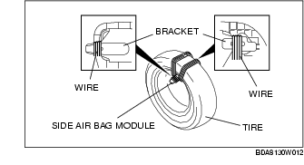
- • If the air bag module is not properly installed to the tire, the tire could roll over by the operation (deployment) impact and serious injury may occur. When installing the air bag module to the tire, make sure the padded surface is facing the center of the tire.
4. Stack the tire with the side air bag module on top of the two tires without wheels. Stack a tire without a wheel on top of the tire with the side air bag module, and then stack another tire with a wheel on the very top.

5. Secure the tires with wire.

6. Connect the SST (Deployment tool) to the SST (Adapter harness).

7. Connect the SST (Deployment tool) to the battery. (Connect the power supply red clip to the battery positive terminal, and the black clip to the battery negative terminal.)
8. Verify that the red light on the SST (Deployment tool) is illuminated.
9. Make sure all persons are standing at least 6 m {20 ft} away from the vehicle.
10. Press the activation switch on the SST (Deployment tool) to deploy the side air bag module.

11. Disconnect the SST (Deployment tool) from the SST (Adapter harness).
Curtain air bag module
1. Remove the curtain air bag module. (See CURTAIN AIR BAG MODULE REMOVAL/INSTALLATION.)
2. Secure the curtain air bag module in a vise and cut off the deployment section, as shown in the figure.

- • Be sure not to crush the pipe on the side where it is cut. If it is crushed completely, the interior pressure of the pipe will build up and can cause it to explode during air bag module operation (deployment).
3. To secure the curtain air bag module to the tire, wrap the wire (diameter of 1.25 mm2 {0.002 in2} or more) through the tire at least four times.
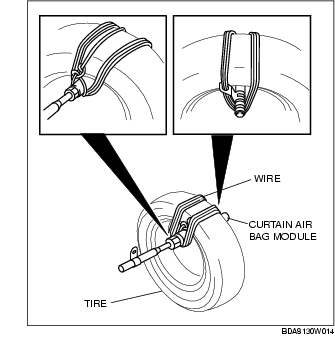
- • If the air bag module is not properly installed to the tire, the tire could roll over by the operation (deployment) impact and serious injury may occur. Make sure to install the air bag module securely.
4. Connect the SST (Adapter harness) to the curtain air bag module as shown in the figure.
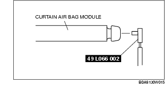
5. Stack the tire with the curtain air bag module on top of the two tires without wheels. Stack a tire without a wheel on top of the tire with the curtain air bag module, and then stack another tire with a wheel on the very top.

- • Always secure the curtain air bag module so that cut surface is pointed upward. If the cut surface is pointed downward, the tire could roll over from the pressure of the gas during deployment.
6. Secure the tires with wire.

7. Connect the SST (Deployment tool) to the SST (Adapter harness).

8. Connect the SST (Deployment tool) to the battery. (Connect the power supply red clip to the battery positive terminal, and the black clip to the battery negative terminal.)
9. Verify that the red light on the SST (Deployment tool) is illuminated.
10. Make sure all persons are standing at least 6 m {20 ft} away from the vehicle.
11. Press the activation switch on the SST (Deployment tool) to operate (deploy) the curtain air bag module.

12. Disconnect the SST (Deployment tool) from the SST (Adapter harness).
Pre-tensioner Seat Belt
1. Remove the pre-tensioner seat belt. (See FRONT SEAT BELT REMOVAL/INSTALLATION.)
- • If the pre-tensioner seat belt is not properly installed to the tire, serious injury may occur when the pre-tensioner part is deployed. When installing the pre-tensioner seat belt to the tire, make sure the pre-tensioner part is inside the tire.
2. Connect the SST (Adapter harness) to the pre-tensioner seat belt as shown in the figure.

3. With the pre-tensioner part inside the tire, tie the pre-tensioner seat belt to the tire. Wrap the wire (diameter of 1.25 mm2 or more) through the tire and around the pre-tensioner seat belt at least four times.
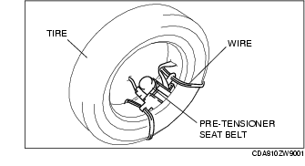
4. Stack the tire with the pre-tensioner seat belt on top of two tires. Stack a tire on top of the three tires. Stack another tire that has a wheel on top of the four tires.
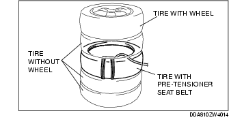
5. Tie all tires together with wire.

6. Connect the SST (Deployment tool) to the SST (Adapter harness).
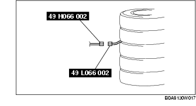
7. Connect the SST (Deployment tool) to the battery. Connect the power supply red clip to the positive battery terminal, the black clip to the negative battery terminal.
8. Verify that the red light on the SST (Deployment tool) is illuminated.
9. Make sure all persons are standing at least 6 m {20 ft} away from the vehicle.
10. Press the activation switch on the SST (Deployment tool) to deploy the pre-tensioner seat belt.

11. Disconnect the SST (Deployment tool) from the SST (Adapter harness).